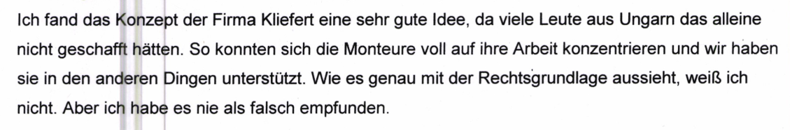
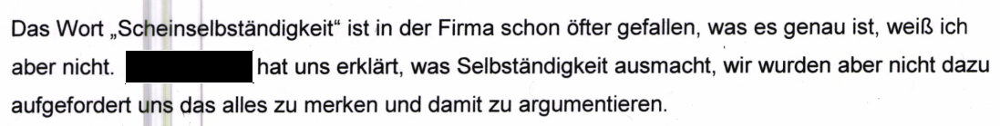

"an das Landgericht Augsburg - Wirtschaftsstrafkammer mit dem Antrag, die Beschwerde (BI. 20 SB 1.1) gegen den Beschluss des Amtsgerichts Augsburg vom 11.08.2017 (BI. 1 ff SB 1.1) kostenpflichtig als unbegründet aus dessen zutreffenden Gründen zu verwerfen. Das Amtsgericht hat der Beschwerde nicht abgeholfen (BI. 21 SB 1.1). Der Haftgrund der Fluchtgefahr entfällt auch nicht dadurch, dass das Verfahren den Beschuldigten schon bekannt war. Zum Zeitpunkt der ersten Durchsuchung beschränkte sich das Verfahren nur auf die Monteure, die an die Fa. M[geschwärzt] entliehen waren. Der Sozialversicherungsschaden lag insoweit bei 487.217,40 €. Inzwischen sind weitaus mehr Taten bekannt, deren Gesamtschaden bei über 8 Mio € liegt (vgl. Schätzung BI. 1548/1549 d.A.). Dies war den Beschuldigten nicht bekannt. Aus der Einlassung des Beschuldigten vor dem Haftrichter wird auch klar, dass er keine Ahnung über die ihm drohende Strafe hatte. Er ging davon aus, dass ihn allenfalls die Rückzahlung der Sozialversicherungsbeiträge als "Strafe" treffen könnte (BI. 18 SB 1.1 5. Absatz). Damit trägt die Argumentation nicht, er hätte sich im Wissen der Straferwartung nicht abgesetzt. Noch drängender ist aber der Haftgrund der Verdunklungsgefahr, wie er sich aus dem Ermittlungsbericht des HZA ergibt. Es wurde in der Vergangenheit verdunkelt, insbesondere durch die Handlungsanweisung an Monteure bei Zollkontrollen, die vom Unternehmen des Beschuldigten aus gingen (vgl. Etwa BI. 997 ff d.A.). Diese Anweisungen wurden auch an „Auftraggeber" ausgegeben, um ein einheitliches Aussageverhalten zu erreichen. Weiter darf auf die Feststellungen BI. 1011 d.A. Bezug genommen werden. Demnach besteht die Gefahr, dass auch in der Zukunft Aussagen abgestimmt werden und auf Zeugen Einfluss genommen wird." Verfügung STA Augsburg vom 13.10.2017 Blatt 1"Es wird darum gebeten, den Beschwerdevorgang im SB 1.1 zu führen. Akteneinsicht bitte ich nur über die StA zu gewähren, da einzelne Aktenteile noch nicht der Einsicht unterliegen, wobei diese nicht Grundlage des Haftbefehls sind. Dr. Wiesner Staatsanwalt als Gruppenleiter" Verfügung STA Augsburg vom 13.10.2017 Blatt 2
Herr Dr. Wiesner begründet seinen Antrag auf Ablehnung der Haftbeschwerde damit, dass mir nicht bekannt gewesen sei, dass der Gesamtschaden bei über 8 Mio € liege. Dies liege daran, dass zum Zeitpunkt der ersten Durchsuchung sich das Verfahren nur auf die Monteure beschränkt habe, die an die Fa. M[geschwärzt] entliehen worden seien.
Während dieser Durchsuchung wurde sich jedoch mitnichten auf die Monteure mit Aufträgen bei der Firma M. beschränkt. Stattdessen wurden die Unterlagen für sämtliche Kunden beschlagnahmt, insgesamt über 1.000 Ordner. Somit war klar, dass sich die Ermittlungen nicht lediglich auf die Firma M. beschränkten. Die Angabe des Herrn Dr. Wiesner ist somit falsch.
Herr Dr. Wiesner führt weiter an, dass ich davon ausginge, dass allenfalls die Rückzahlung der Sozialversicherungsbeiträge als "Strafe" treffen könnte. Ich hatte jedoch angegeben, dass ich die hohe Straferwartung deshalb nicht fürchte, weil alles legal war, was wir gemacht haben. Im nächsten Satz hatte ich angegeben "Selbst wenn ich die 8.000.000 Euro bezahlen muss, das ist mir egal, Geld ist mir nicht wichtig solange es zum Leben reicht.". Ich hatte diese Summe jedoch nicht als Strafe bezeichnet. Die Angabe des Herrn Dr. Wiesner ist somit falsch.
Herr Dr. Wiesner führt weiter an, drängender sei der Haftgrund der Verdunklungsgefahr, wie er sich aus dem Ermittlungsbericht des HZA ergebe sowie durch BI. 1011 d.A. ergebe. Dabei handelt es sich um ein Blatt mit ungarischem Text:
Hier die Übersetzung der "Handlungsanweisung an Monteure bei Zollkontrollen" der Staatsanwaltschaft:
"Sehr geehrte Unternehmer! Bei einer Zollkontrolle bitten wir Sie folgende Punkte zu beachten: Du als selbständiger Unternehmer weist dich mit der Gewerbeanmeldung und deiner Visitenkarte aus (die bereits Eine besitzen, der noch keine bekommen hat wird in der Zukunft welche erhalten) Du arbeitest mit deinem eigenen Werkzeug und fährst mit deinem eigenen Auto zur Arbeit. Deine Arbeitsbekleidung kaufst du dir selber. Wenn die Auftrag gebende Firma dir irgendwelche firmeneigene Arbeitsbekleidung (T-Shirt, Jacke) gibt, dient das nur der Identifizierung auf der großen Baustelle. Über deine Arbeitszeit entscheidest du selber und du entscheidest wann du deinen Urlaub machst. Du verfügst über die Versicherungen (Kranken- und Unfallversicherung) und bezahlst in Deutschland deine Steuern. Nachdem du auf verschiedenen Baustellen für verschiedene Firmen arbeitest, alle deine Papiere befinden sich am Sitz deines Unternehmens in Tübingen im Büro. Wenn der Zoll etwas davon sehen möchte, muss man das Büro anrufen. Ohne Dolmetscher mache keine Angaben wo du dir nicht sicher bist. Wenn du das Auto der Auftrag gebenden Firma benutzt dann nur zu dem Zweck das du Baumaterial zur Baustelle bringst um weiter arbeiten zu können. Kliefert Industrieconsulting e.K." Handlungsanweisungen Zollkontrollen
Quelle: Blatt 844f Hauptakte
Zu diesem Blatt wurden auch meine Mitarbeiter befragt:
"Der Zeugin wird die Anweisung zu Zollkontrollen vorgelegt. Ich habe das noch nie gesehen. Aber im Grunde genommen sind die Angaben nicht falsch. Sie hatten eigenes Werkzeug, haben entschieden wie lange sie auf der Baustelle sind, sie zahlen Steuern, sie haben entschieden wann sie Urlaub machen, sie hatten Visitenkarten usw. Also es trifft alles so zu, es ist keine Aufforderung etwas Falsches zu sagen, da ja alles so stimmt. Das Dokument kenne ich aber trotzdem nicht. Ich weiß, dass sie die Visitenkarten dabei haben sollen, da ich diese ja erstellt hat. Ich glaube es ist mal vorgekommen, dass Handwerker angerufen haben, weil der Zoll auf der Baustelle war. Die Beamten haben dann mit [geschwärzt] gesprochen. Sie hat geholfen beim Übersetzungen und die Fragen der Beamten zu beantworten." Aussage einer Mitarbeiterin von Kliefert
Quelle: Blatt 1.089 SB 2 Vernehmungen
Die Angaben der "Anweisungen für Zollkontrollen" sind alle wahr, folglich handelt es sich bei den "Anweisungen bei Zollkontrollen" nicht um Anweisungen, den Zoll zu belügen. Dass die Angaben wahr sind, geht zusätzlich aus dem Gutachten der DRV Baden-Württemberg zur Firma Kliefert hervor:
Es ist bereits falsch, diese Hinweise als Anweisung zu bezeichnen, denn sie richten sich an "Unternehmer". Unternehmer sind nicht weisungsgebunden und empfangen dementsprechend keine "Anweisungen".
Da es sich weder um Anweisungen handelt noch um unwahre Angaben, folgt, dass hierdurch nichts verdunkelt wird. Eher trifft die Bezeichnung "Erhellend".
Überdies hatte lediglich ein Auftraggeber von insgesamt 200 Auftraggebern dieses Schriftstück erhalten. Die Angabe des Staatsanwalts Dr. Markus Wiesner, "Diese Anweisungen wurden auch an „Auftraggeber" ausgegeben, um ein einheitliches Aussageverhalten zu erreichen.", ist somit falsch.
Dies wurde später von der Staatsanwaltschaft selbst zugegeben:
"Richtlinien zum Verhalten gegenüber Zollkontrollen: Die Richtlinien wurden erstellt, aber nach dem Ergebnis der bisherigen Beweisaufnahme ist nicht nachweisbar, dass sie allgemein bekannt gemacht wurden." Verfügung vom 16.02.2021
Da auch im Jahr 2021 keine Beweise für die Behauptung "Diese Anweisungen wurden auch an „Auftraggeber" ausgegeben, um ein einheitliches Aussageverhalten zu erreichen." vorlagen, konnten diese bereits nicht im Jahr 2017 vorgelegen haben. Die Angabe des Staatsanwalts Dr. Wiesner erfolgte somit vorsätzlich wahrheitswidrig.
Sowohl von den zunächst vom Zoll als auch von den gerichtlich vernommenen Mandanten kannte kein einziger dieses Schreiben.
Aus den Herrn Dr. Wiesner vorliegenden Beweismittel ergab sich nicht, dass die Angaben unwahr waren und es ergab sich nicht, dass mehr als ein Auftraggeber von 200 dieses Schreiben erhalten hatte. Die Behauptung, hierdurch hätten Verdunkelungshandlungen stattgefunden, um ein einheitliches Aussageverhalten zu erreichen, erfolgte somit offenbar vorsätzlich den Tatsachen widersprechend.
"aus dem Ermittlungsbericht des HZA ergebe sowie durch BI. 1011 d.A."
Diese Angabe bezieht sich auf die Vernehmungsaussagen einer weiteren Mitarbeiterin meiner Firma.
In diesem Ermittlungsverfahren wurden 273 Vernehmungen durchgeführt. Jede dieser Vernehmungen erfolgte persönlich, also von Zollbeamten, die sich mit der Vernehmungsperson physisch im selben Raum befanden. Das jeweilige Protokoll wurde von der vernommenen Person unterschrieben.
Zusätzlich gab es exakt eine Vernehmung, die per Telefon erfolgte: Die von dieser Mitarbeiterin. Ein Protokoll dieser Vernehmung existiert nicht. Stattdessen fasste der leitende Ermittler Herr Axel Schur, der das Telefonat geführt hatte, die angeblich von der Mitarbeiterin getätigten Aussagen zusammen:
"Frau [geschwärzt] wurde auf Mittwoch, den 19.10.2016 um 14:00 Uhr` als Zeugin in dem o.a. Ermittlungsverfahren geladen. Sie rief heute auf hiesiger Dienststelle an und teilte mit, dass sie nächste Woche in Portugal in Urlaub sei. Es wurde vereinbart, dass die Vernehmung nach ihrer Rückkehr durchgeführt wird. Frau [geschwärzt] erklärte, sie sei sehr froh, dass sie von dem Unternehmen Kliefert losgekommen sei und eine neue Arbeitsstelle habe. Sie würde uns gerne bei der Sachaufklärung helfen, wolle aber keinesfalls wieder auf die handelnden Personen der Fa. Kliefert treffen. Das „Gehirn" der Fa. Kliefert sei [geschwärzt], „ohne sie geht nichts". [geschwärzt] habe [geschwärzt] studiert, ihre engsten Mitarbeiterinnen seien [geschwärzt]. Carl Kliefert und [geschwärzt] seien am Unternehmen wenig interessiert und engagiert. Während ihres Studiums habe [geschwärzt] im Unternehmen sehr wenig gearbeitet. Zu ihrer eigenen Tätigkeit gab Frau [geschwärzt] an, dass sie für „130 Mitarbeiter" Monteursunterkünfte organisiert habe und Anrufe der Mitarbeiter entgegen genommen habe. Die Monteure seien nur nach Außen als selbständig dargestellt worden. Hierzu sei [geschwärzt] „sehr kreativ" geworden. Tatsächlich seien die Mitarbeiter scheinselbständig gewesen. So hätten sie nur auf dem Papier eigene Konten gehabt. Tatsächlich seien diese von der Fa. Kliefert verwaltet worden. Die Monteure hätten auch nicht selbst entscheiden können, für welchem Auftraggeber sie tätig werden wollten, diese seien ihnen von der Fa. Kliefert zugewiesen worden. Die Aufträge seien von [geschwärzt] organisiert worden. Sie sei der Kopf des Unternehmens, [geschwärzt] sei ihre Vertreterin: Das von den ungarischen Monteuren genutzte Werkzeug wird von der Fa. Kliefert gekauft und an die ungarischen Monteure ausgeliehen. Aufgrund von Kontrollen sei man zuletzt" Vorgebliche Angaben der telefonisch befragten Mitarbeiterin Seite 1"auch dazu übergegangen, gebrauchte Werkzeuge zu sehr niedrigen Priesen an die Monteure zu verkaufen, damit Kaufverträge über Werkzeug vorgelegt werden können. Die Richtlinie, welche Angaben bei Zollkontrollen zu machen seien, wären im Unternehmen bekannt. Neue Monteure würden von [geschwärzt] und von [geschwärzt] eingewiesen, welche Angaben sie , bei Kontrollen zu machen hätten. F.d.V. Schur" Vorgebliche Angaben der telefonisch befragten Mitarbeiterin Seite 2
Quelle: Blatt 253 Hauptakte
Diese Mitarbeiterin wurde später noch einmal persönlich und anschließend gerichtlich befragt. In diesen beiden Vernehmungen sagte sie das genaue Gegenteil von dem, was Herr Schur angegeben hatte. Zu der persönlichen Vernehmung beim Zoll existiert ein schriftliches Protokoll mit ihrer Unterschrift:
"Ich fand das Konzept der Firma Kliefert eine sehr gute Idee, da viele Leute aus Ungarn das alleine nicht geschafft hätten. So konnten sich die Monteure voll auf ihre Arbeit konzentrieren und wir haben sie in den anderen Dingen unterstützt. Wie es genau mit der Rechtsgrundlage aussieht, weiß ich nicht. Aber ich habe es nie als falsch empfunden." Aussage derselben Mitarbeiterin beim Zoll"[geschwärzt] wird das Schreiben "Zollkontrollen" gezeigt: Ja das habe ich gesehen, aber ich musste es nicht den Ungarn erklären. Es war einfach ein Hinweis für die Monteure damit sie wissen was in Deutschland wichtig ist. In Ungarn hatte ich z.B. auch nicht immer alle meine Papier dabei, weil dort alles etwas lockerer war. Ich hatte nie das Gefühl, dass das alles etwas Illegales war. Ich habe die Firma Kliefert immer als etwas Beratendes und Unterstützende für die Monteure gesehen und nie als Zwang." Aussage derselben Mitarbeiterin beim Zoll"Was genau bei den "Erstgesprächen" mit den Monteuren besprochen wurde, weiß ich nicht. Ich kann mir vorstellen, dass sie darauf hingewiesen wurden, wie sie sich z.B. bei einer Zollkontrolle verhalten sollen. Aber ich glaube nicht, dass von ihnen verlangt wurde zu lügen oder so etwas in der Art. Ich habe auch keine derartigen Anweisungen bekommen. Ich hatte auch nicht das Gefühl, dass wir etwas Falsches gemacht haben. Herr und Frau Kliefert und [geschwärzt] waren auch nicht vom Typ her so, dass sie jemanden zu etwas gezwungen hätten." Aussage derselben Mitarbeiterin beim Zoll"Das Wort "Scheinselbständigkeit" ist in der Firma schon öfter gefallen, was es genau ist, weiß ich aber nicht. [geschwärzt] hat uns erklärt, was Selbständigkeit ausmacht, wir wurden aber nicht dazu aufgefordert uns das alles zu merken und damit zu argumentieren." Aussage derselben Mitarbeiterin beim Zoll"Es wurde kein Monteur zu einem Auftrag gezwungen. Ich kann mir aber vorstellen, dass man die Monteure überzeugt hat Aufträge anzunehmen. Die Firma Kliefert war daran interessiert wenn alle Monteure ausgelastet wurden. Ich kann mich nicht daran erinnern, dass ein Monteur aus der,,Kartei" von Kliefert rausgeschmissen wurde." Aussage derselben Mitarbeiterin beim Zoll
Quelle: Blatt 2.093 SB 4 Vernehmungen.
Hieraus folgt, dass Herr Schur hinsichtlich der von der Mitarbeiterin getätigten Aussagen offenbar vorsätzlich falsche Angaben gemacht hat.
Die Vollstreckung der Untersuchungshaft beruht folglich allein auf unwahren Angaben von Staatsanwalt Dr. Wiesner und dem leitenden Ermittler Herrn Axel Schur. Diese waren offenbar nötig, um Flucht- und Verdunkelungsgefahr und somit die Untersuchungshaft zu begründen.
![an das Landgericht Augsburg - Wirtschaftsstrafkammer mit dem Antrag, die Beschwerde (BI. 20 SB 1.1) gegen den Beschluss des Amtsgerichts Augsburg vom 11.08.2017 (BI. 1 ff SB 1.1) kostenpflichtig als unbegründet aus dessen zutreffenden Gründen zu verwerfen. Das Amtsgericht hat der Beschwerde nicht abgeholfen (BI. 21 SB 1.1). Der Haftgrund der Fluchtgefahr entfällt auch nicht dadurch, dass das Verfahren den Beschuldigten schon bekannt war. Zum Zeitpunkt der ersten Durchsuchung beschränkte sich das Verfahren nur auf die Monteure, die an die Fa. Merk entliehen waren. Der Sozialversicherungsschaden lag insoweit bei 487.217,40 €. Inzwischen sind weitaus mehr Taten bekannt, deren Gesamtschaden bei über 8 Mio € liegt (vgl. Schätzung BI. 1548/1549 d.A.). Dies war den Beschuldigten nicht bekannt. Aus der Einlassung des Beschuldigten vor dem Haftrichter wird auch klar, dass er keine Ahnung über die ihm drohende Strafe hatte. Er ging davon aus, dass ihn allenfalls die Rückzahlung der Sozialversicherungsbeiträge als "Strafe" treffen könnte (BI. 18 SB 1.1 5. Absatz). Damit trägt die Argumentation nicht, er hätte sich im Wissen der Straferwartung nicht abgesetzt. Noch drängender ist aber der Haftgrund der Verdunklungsgefahr, wie er sich aus dem Ermittlungsbericht des HZA ergibt. Es wurde in der Vergangenheit verdunkelt, insbesondere durch die Handlungsanweisung an Monteure bei Zollkontrollen, die vom Unternehmen des Beschuldigten aus gingen (vgl. Etwa BI. 997 ff d.A.). Diese Anweisungen wurden auch an „Auftraggeber" ausgegeben, um ein einheitliches Aussageverhalten zu erreichen. Weiter darf auf die Feststellungen BI. 1011 d.A. Bezug genommen werden. Demnach besteht die Gefahr, dass auch in der Zukunft Aussagen abgestimmt werden und auf Zeugen Einfluss genommen wird.](images/f/fb/Imagekl5366.png)
!["Sehr geehrte Unternehmer! Bei einer Zollkontrolle bitten wir Sie folgende Punkte zu beachten: Du als selbständiger Unternehmer weist dich mit der Gewerbeanmeldung und deiner Visitenkarte aus (die bereits Eine besitzen, der noch keine bekommen hat wird in der Zukunft welche erhalten) Du arbeitest mit deinem eigenen Werkzeug und fährst mit deinem eigenen Auto zur Arbeit. Deine Arbeitsbekleidung kaufst du dir selber. Wenn die Auftrag gebende Firma dir irgendwelche firmeneigene Arbeitsbekleidung (T-Shirt, Jacke) gibt, dient das nur der Identifizierung auf der großen Baustelle. Über deine Arbeitszeit entscheidest du selber und du entscheidest wann du deinen Urlaub machst. Du verfügst über die Versicherungen (Kranken- und Unfallversicherung) und bezahlst in Deutschland deine Steuern. Nachdem du auf verschiedenen Baustellen für verschiedene Firmen arbeitest, alle deine Papiere befinden sich am Sitz deines Unternehmens in Tübingen im Büro. Wenn der Zoll etwas davon sehen möchte, muss man das Büro anrufen. Ohne Dolmetscher mache keine Angaben wo du dir nicht sicher bist. Wenn du das Auto der Auftrag gebenden Firma benutzt dann nur zu dem Zweck das du Baumaterial zur Baustelle bringst um weiter arbeiten zu können. Kliefert Industrieconsulting e.K." Handlungsanweisungen Zollkontrollen](images/a/ae/Imagef34t4t.png)
!["Der Zeugin wird die Anweisung zu Zollkontrollen vorgelegt. Ich habe das noch nie gesehen. Aber im Grunde genommen sind die Angaben nicht falsch. Sie hatten eigenes Werkzeug, haben entschieden wie lange sie auf der Baustelle sind, sie zahlen Steuern, sie haben entschieden wann sie Urlaub machen, sie hatten Visitenkarten usw. Also es trifft alles so zu, es ist keine Aufforderung etwas Falsches zu sagen, da ja alles so stimmt. Das Dokument kenne ich aber trotzdem nicht. Ich weiß, dass sie die Visitenkarten dabei haben sollen, da ich diese ja erstellt hat. Ich glaube es ist mal vorgekommen, dass Handwerker angerufen haben, weil der Zoll auf der Baustelle war. Die Beamten haben dann mit [geschwärzt] gesprochen. Sie hat geholfen beim Übersetzungen und die Fragen der Beamten zu beantworten." Aussage einer Mitarbeiterin von Kliefert](images/c/c9/Imagef34345.png)

!["Frau [geschwärzt] wurde auf Mittwoch, den 19.10.2016 um 14:00 Uhr` als Zeugin in dem o.a. Ermittlungsverfahren geladen. Sie rief heute auf hiesiger Dienststelle an und teilte mit, dass sie nächste Woche in Portugal in Urlaub sei. Es wurde vereinbart, dass die Vernehmung nach ihrer Rückkehr durchgeführt wird. Frau [geschwärzt] erklärte, sie sei sehr froh, dass sie von dem Unternehmen Kliefert losgekommen sei und eine neue Arbeitsstelle habe. Sie würde uns gerne bei der Sachaufklärung helfen, wolle aber keinesfalls wieder auf die handelnden Personen der Fa. Kliefert treffen. Das „Gehirn" der Fa. Kliefert sei [geschwärzt], „ohne sie geht nichts". [geschwärzt] habe [geschwärzt] studiert, ihre engsten Mitarbeiterinnen seien [geschwärzt]. Carl Kliefert und [geschwärzt] seien am Unternehmen wenig interessiert und engagiert. Während ihres Studiums habe [geschwärzt] im Unternehmen sehr wenig gearbeitet. Zu ihrer eigenen Tätigkeit gab Frau [geschwärzt] an, dass sie für „130 Mitarbeiter" Monteursunterkünfte organisiert habe und Anrufe der Mitarbeiter entgegen genommen habe. Die Monteure seien nur nach Außen als selbständig dargestellt worden. Hierzu sei [geschwärzt] „sehr kreativ" geworden. Tatsächlich seien die Mitarbeiter scheinselbständig gewesen. So hätten sie nur auf dem Papier eigene Konten gehabt. Tatsächlich seien diese von der Fa. Kliefert verwaltet worden. Die Monteure hätten auch nicht selbst entscheiden können, für welchem Auftraggeber sie tätig werden wollten, diese seien ihnen von der Fa. Kliefert zugewiesen worden. Die Aufträge seien von [geschwärzt] organisiert worden. Sie sei der Kopf des Unternehmens, [geschwärzt] sei ihre Vertreterin: Das von den ungarischen Monteuren genutzte Werkzeug wird von der Fa. Kliefert gekauft und an die ungarischen Monteure ausgeliehen. Aufgrund von Kontrollen sei man zuletzt" Vorgebliche Angaben der telefonisch befragten Mitarbeiterin Seite 1](images/b/b6/Imagek5k5.png)
!["auch dazu übergegangen, gebrauchte Werkzeuge zu sehr niedrigen Priesen an die Monteure zu verkaufen, damit Kaufverträge über Werkzeug vorgelegt werden können. Die Richtlinie, welche Angaben bei Zollkontrollen zu machen seien, wären im Unternehmen bekannt. Neue Monteure würden von [geschwärzt] und von [geschwärzt] eingewiesen, welche Angaben sie , bei Kontrollen zu machen hätten. F.d.V. Schur" Vorgebliche Angaben der telefonisch befragten Mitarbeiterin Seite 2](images/1/11/Imagel3l3.png)
!["[geschwärzt] wird das Schreiben "Zollkontrollen" gezeigt: Ja das habe ich gesehen, aber ich musste es nicht den Ungarn erklären. Es war einfach ein Hinweis für die Monteure damit sie wissen was in Deutschland wichtig ist. In Ungarn hatte ich z.B. auch nicht immer alle meine Papier dabei, weil dort alles etwas lockerer war. Ich hatte nie das Gefühl, dass das alles etwas Illegales war. Ich habe die Firma Kliefert immer als etwas Beratendes und Unterstützende für die Monteure gesehen und nie als Zwang." Aussage derselben Mitarbeiterin beim Zoll](images/b/b0/Image2rf2.png)
!["Was genau bei den "Erstgesprächen" mit den Monteuren besprochen wurde, weiß ich nicht. Ich kann mir vorstellen, dass sie darauf hingewiesen wurden, wie sie sich z.B. bei einer Zollkontrolle verhalten sollen. Aber ich glaube nicht, dass von ihnen verlangt wurde zu lügen oder so etwas in der Art. Ich habe auch keine derartigen Anweisungen bekommen. Ich hatte auch nicht das Gefühl, dass wir etwas Falsches gemacht haben. Herr und Frau Kliefert und [geschwärzt] waren auch nicht vom Typ her so, dass sie jemanden zu etwas gezwungen hätten." Aussage derselben Mitarbeiterin beim Zoll](images/7/74/Imagek23j4.png)